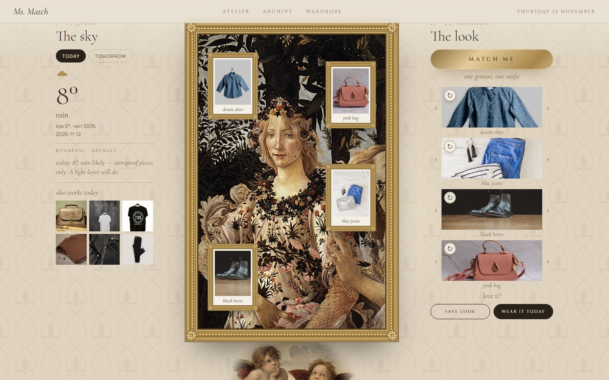

I · 7:00 Check the sky
Answer the location prompt, or say no and get Budapest's forecast instead. On this morning it was 8°, with rain all but certain. Once the forecast is in, Flora is dressed for it: a denim shirt, blue jeans, black boots and a pink bag, the warmth and the rain worked out from the forecast.
